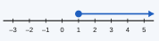
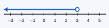
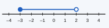
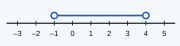

Instructions: Answer all questions. Show all your working clearly in the space given.
Write each statement as an inequality using a suitable symbol.
(i) x is greater than 5.
(ii) y is less than or equal to −2.
(iii) The age a (in years) of a voter must be at least 18.
(iv) The mass m of a bag must not exceed 20 kg.
(v) The temperature t of a room is between 20 °C and 30 °C, including both values.
State whether each statement is true or false.
(i) −3 > −5 (ii) 0 < −1 (iii) ½ ≥ 0.5 (iv) −2 ≤ −2 (v) 3 × (−2) > −5
Represent each inequality on a number line.
(i) x > 2 (ii) x ≤ −1 (iii) −2 < x ≤ 3 (iv) 0 ≤ x < 4
Write the inequality represented on each number line.




Write all the integer values of x that satisfy each inequality.
(i) −2 < x ≤ 3 (ii) −4 ≤ x < 0 (iii) x ≤ 5, where x is a positive integer
Solve each inequality and represent the solution on a number line.
(i) x + 4 > 9 (ii) x − 3 ≤ 2 (iii) 3x ≥ 12
(iv) x2 < 3 (v) 2x + 1 > 7 (vi) 5x − 3 ≤ 2x + 9
Challenge: Solve each inequality. Remember the rule for multiplying or dividing by a negative number.
(i) −2x < 6 (ii) 5 − x ≥ 2
(i) Solve 3(x − 2) < x + 4 and write the greatest integer that satisfies it.
(ii) Solve x + 12 ≥ 3 and write the smallest integer that satisfies it.
Form an inequality and solve it in each case.
(i) A pen costs Rs 45. What is the maximum number of pens that can be bought with Rs 500?
(ii) A lift can carry a maximum load of 600 kg. The operator weighs 70 kg and each box weighs 40 kg. What is the maximum number of boxes the lift can carry with the operator?
(iii) The sum of three consecutive integers is less than 40. Find the largest possible value of the smallest integer, and write the three integers.
(i) Write the integers that satisfy both x > −2 and x ≤ 3, and show them on a number line.
(ii) Write the even integers x such that x ≥ 1 and x < 7.
Thinking question: The length of a rectangle is 8 cm and its breadth is x cm. Its perimeter must be less than 30 cm.
(i) Form an inequality in x and solve it.
(ii) If x is a whole number of centimetres, write all the possible values of x.